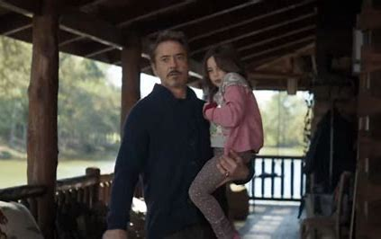
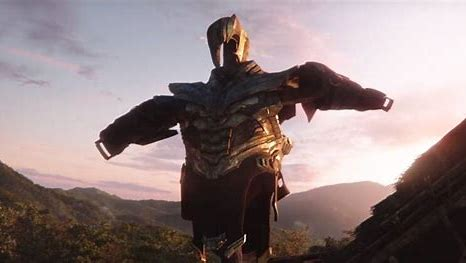

After Thanos had completed his goal in killing half of life in the universe, his actions had become common knowledge, especially on Earth. The global population was despaired by the loss of their respective loved ones, world governments that remained struggled to take a census, and pop-culture got frozen eversince. Hawkeye, under the belief that he can never regain his family, went as the Ronin to kill criminals that were lucky enough to survive the mass genocide from the Snap. Tony Stark, retiring from the Avengers managed to find peace when he married Pepper Potts and had a child. Steve Rogers worked for a Brooklyn Support Group to help others recover from the catastrophe. Thor became the miserable king of New Asgard, unable to cope with his failure. The remaining Avengers do their best to fight for Earth.
As half of all life across the universe began to disintegrate as a result of his actions, Thanos reappeared on his Garden. Unable to hear all the screams of sadness and pain that were going out across the universe as trillions died in front of their loved ones, Thanos rested in a small hut with a view overlooking the alien countryside. Having at long last accomplished his objective, Thanos peacefully gazed out to the rising sun and smiled in satisfaction.
Three weeks after the incident, knowing that he would be tempted into a lust for power and acknowledging that the Avengers would likely target them, Thanos utilized the Infinity Stones a final time to reduce them to the atomic level with their own energies, essentially destroying them and eliminating any possibility from reversing the damage he did, which caused grievous wounds and scars on his body, mainly those parts nearest to the Infinity Gauntlet, which was further damaged by the stones' destruction as well.
Severely wounded, Thanos continued to tend to his hut on the Garden. Knowing he would die sooner or later, Thanos now only wanted to spend his remaining days in peace.